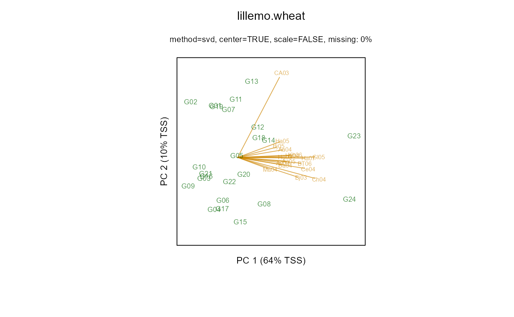

Multi-environment trial of wheat susceptibile to powdery mildew
lillemo.wheat.RdResistance of wheat to powdery mildew
data("lillemo.wheat")
Format
A data frame with 408 observations on the following 4 variables.
gengenotype, 24 levels
envenvironrment, 13 levels
scorescore
scalescale used for score
Details
The data are means across reps of the original scores. Lower scores indicate better resistance to mildew.
Each location used one of four different measurement scales for scoring resistance to powdery mildew: 0-5 scale, 1-9 scale, 0-9 scale, percent.
Environment codes consist of two letters for the location name and two digits for the year of testing. Location names: CA=Cruz Alta, Brazil. Ba= Bawburgh, UK. Aa=As, Norway. Ha=Hamar, Norway. Ch=Choryn, Poland. Ce=Cerekwica, Poland. Ma=Martonvasar, Hungary. Kh=Kharkiv, Ukraine. BT=Bila Tserkva, Ukraine. Gl=Glevakha, Ukraine. Bj=Beijing, China.
Note, Lillemo et al. did not remove genotype effects as is customary when calculating Huehn's non-parametric stability statistics.
In the examples below, the results do not quite match the results of Lillemo. This could easily be the result of the original data table being rounded to 1 decimal place. For example, environment 'Aa03' had 3 reps and so the mean for genotype 1 was probably 16.333, not 16.3.
Source
Morten Lillemo, Ravi Sing, Maarten van Ginkel. (2011). Identification of Stable Resistance to Powdery Mildew in Wheat Based on Parametric and Nonparametric Methods Crop Sci. 50:478-485. http://doi.org/10.2135/cropsci2009.03.0116
Used with permission of Morten Lillemo.
Electronic data supplied by Miroslav Zoric.
References
None.
Examples
library(agridat) data(lillemo.wheat) dat <- lillemo.wheat # Change factor levels to match Lillemo dat$env <- as.character(dat$env) dat$env <- factor(dat$env, levels=c("Bj03","Bj05","CA03","Ba04","Ma04", "Kh06","Gl05","BT06","Ch04","Ce04", "Ha03","Ha04","Ha05","Ha07","Aa03","Aa04","Aa05")) # Interesting look at different measurement scales by environment libs(lattice) qqmath(~score|env, dat, group=scale, as.table=TRUE, scales=list(y=list(relation="free")), auto.key=list(columns=4), main="lillemo.wheat - QQ plots by environment")# ----------------------------------------------------------------------------# Change data to matrix format libs(reshape2) datm <- acast(dat, gen~env, value.var='score') # Environment means. Matches Lillemo Table 3 apply(datm, 2, mean)#> Bj03 Bj05 CA03 Ba04 Ma04 Kh06 Gl05 BT06 #> 3.750000 4.729167 1.854167 4.362500 5.208333 17.875000 16.479167 14.708333 #> Ch04 Ce04 Ha03 Ha04 Ha05 Ha07 Aa03 Aa04 #> 4.750000 4.416667 14.504167 18.416667 21.354167 16.270833 23.012500 12.833333 #> Aa05 #> 24.062500# Two different transforms within envts to approximate 0-9 scale datt <- datm datt[,"CA03"] <- 1.8 * datt[,"CA03"] ix <- c("Ba04","Kh06","Gl05","BT06","Ha03","Ha04","Ha05","Ha07","Aa03","Aa04","Aa05") datt[,ix] <- apply(datt[,ix],2,sqrt) # Genotype means of transformed data. Matches Lillemo table 3. round(rowMeans(datt),2)#> G01 G02 G03 G04 G05 G06 G07 G08 G09 G10 G11 G12 G13 G14 G15 G16 #> 3.24 2.40 2.96 3.05 3.76 3.38 3.74 4.66 2.34 2.64 3.97 4.61 4.47 4.85 3.83 2.95 #> G17 G18 G19 G20 G21 G22 G23 G24 #> 3.45 4.61 3.34 4.08 2.91 3.79 7.72 7.46# Biplot of transformed data like Lillemo Fig 2 libs(gge) biplot(gge(datt, scale=FALSE), main="lillemo.wheat")#> 1: 337.6127 #> 2: 325.4158 #> Final: 324.2539# Half-normal prob plot like Fig 1 # libs(faraway) # halfnorm(abs(as.vector(m1$resid))) # Nonparametric stability statistics. Lillemo Table 4. huehn <- function(mat){ # Gen in rows, Env in cols nenv <- ncol(mat) # Corrected yield. Remove genotype effects # Remove the following line to match Table 4 of Lillemo mat <- sweep(mat, 1, rowMeans(mat)) + mean(mat) # Ranks in each environment rmat <- apply(mat, 2, rank) # Mean genotype rank across envts MeanRank <- apply(rmat, 1, mean) # Huehn S1 gfun <- function(x){ oo <- outer(x,x,"-") sum(abs(oo)) # sum of all absolute pairwise differences } S1 <- apply(rmat, 1, gfun)/(nenv*(nenv-1)) # Huehn S2 S2 <- apply((rmat-MeanRank)^2,1,sum)/(nenv-1) out <- data.frame(MeanRank,S1,S2) rownames(out) <- rownames(mat) return(out) } round(huehn(datm),2) # Matches table 4#> MeanRank S1 S2 #> G01 12.00 7.01 36.12 #> G02 14.53 9.66 71.51 #> G03 13.29 7.59 41.72 #> G04 14.06 9.51 68.93 #> G05 11.00 7.26 38.50 #> G06 13.47 3.99 12.39 #> G07 12.29 6.66 33.22 #> G08 10.06 9.18 65.68 #> G09 14.47 7.21 38.01 #> G10 14.00 6.47 31.00 #> G11 10.88 7.47 41.74 #> G12 10.82 7.29 40.53 #> G13 10.88 8.97 62.49 #> G14 11.18 8.69 55.65 #> G15 13.12 7.34 39.99 #> G16 13.88 6.00 27.74 #> G17 11.88 6.97 35.74 #> G18 10.94 6.37 31.81 #> G19 14.24 5.40 21.32 #> G20 11.06 7.87 46.43 #> G21 14.88 7.96 48.99 #> G22 11.35 9.00 59.87 #> G23 13.00 11.85 117.12 #> G24 12.71 11.29 102.22# I do not think phenability package gives correct values for S1 # libs(phenability) # nahu(datm)